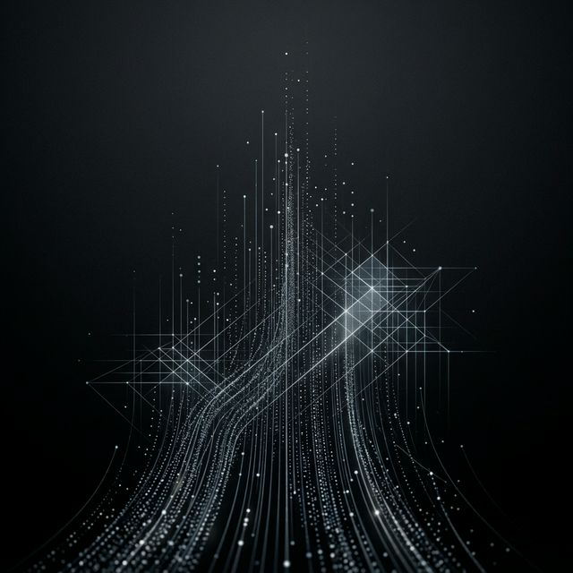

Menos trabalho repetitivo.
Mais margem de lucro.
Eliminamos o trabalho repetitivo da sua equipe. Conectamos Inteligência Artificial ao seu ERP, financeiro e processos internos. Menos custos, zero falhas.
O Processo.
Metodologia orientada por dados, desde o conceito estratégico até a escala final dos seus agentes de IA.
Auditoria
e Descoberta
Mapeamos as ineficiências operacionais do seu negócio para identificar gargalos com o maior potencial de automação.
Engenharia
de Inteligência
Desenvolvemos os robôs de software e integramos as IAs diretamente ao seu ERP ou WhatsApp para que a máquina execute as tarefas repetitivas sozinha.

Implantação
e Escala
Lançamento em ambiente de produção com sistemas de monitoramento contínuo. Sua empresa não dorme mais.
Operações que rodam sozinhas.
Quatro frentes de trabalho repetitivo que substituímos por robôs com IA — direto no ERP, financeiro e processos internos da sua empresa.
Importação Fiscal & Logística sem Cliques
Notas, CT-e e XMLs entram direto no ERP. Ninguém precisa baixar, conferir ou digitar.
Agenda & Processos Internos via WhatsApp
Marcação, reagendamento e atualização do sistema rodam direto pelo WhatsApp — sem ninguém parar pra fazer no manual.
Não é chatbot. É a sua operação interna usando o WhatsApp como ferramenta.
Conciliação Bancária Autônoma
Extratos cruzados com notas fiscais sem ninguém conferir planilha.
Emissão Automática de NF-e
Do faturamento do pedido à prefeitura e envio ao cliente, em segundos e sem erros de digitação.
Esses são quatro exemplos. A sua operação tem outros.
Ver o que dá pra automatizar na minha empresa →O que muda
Quando o robô
faz o trabalho de
robô.
Potencial de impacto quando tarefas manuais repetitivas são substituídas por IA.
Antes × Depois
Cases por setor
Menos pessoas em tarefas manuais.
Mais pessoas focadas no
crescimento.
A sua empresa não precisa crescer contratando mais — precisa trabalhar de forma mais inteligente.
 WhatsApp
WhatsApp OpenAI
OpenAI Make
Make